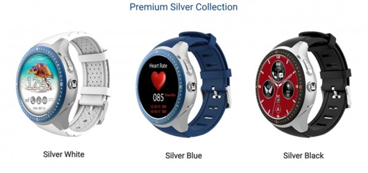
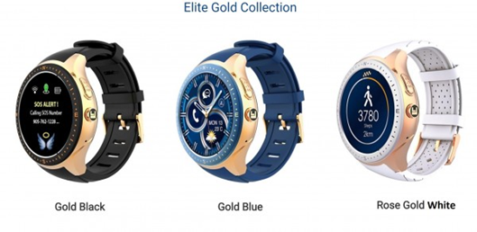

Toronto, ON – Laipac Technology Inc., a world leader in the development of IoT (Internet of Things) products, is proud to announce that it is among the winners of the prestigious German Design Awards 2019 by German Design Council for its LooK Watch, in the category of Lifestyle and Fashion.
The German Design Awards is one of the most renowned design competitions worldwide and enjoys an excellent reputation far beyond circles of experts. Winners of the awards were determined by a highly esteemed international jury of experts, who seek out projects that truly represent pioneering contributions to the German and international design landscape. With a high caliber of competitors, those who rise to the top are recognized beyond doubt as being the best in the world.
“Laipac has been focusing on innovation since day one, and that was 20 years ago,” says Maria Pacini, CIO and Co-Founder of Laipac Technology. “Being recognized by the German Design Awards 2019 is a tremendous honour, which strengthens our resolve to provide well designed products that are stylish, elegant, reliable and affordable.”

The award is being presented on the merits of the highly acclaimed LooK Watch, an Internet of Things Integrated Standalone Smartwatch. An attractive wearable device, the LooK Watch integrates cellphone connectivity, WiFi Bluetooth, a heart rate sensor, advanced quad core processor with GPS, and a high-grade stainless-steel body. It’s also water resistant and comes with invaluable safety features that include a built-in SOS button preprogrammed with emergency contact numbers, Geofence, which enables the customization of multiple virtual fences, and Virtual Nurse, which monitors heart rates with medication reminders, Regular Check In, which provides assurance for safety of lone workers.

The LooK Watch comes in a stunning array of colours and customizable digital faces with high-grade stainless steel and AMOLED display. It’s one of the most advanced safety and health wellness smartwatch phones in the market. LooK Watch also provides the new Push To Talk feature for field workers to improve their safety and efficiency.
The awards ceremony is scheduled to take place in Frankfurt, on 8 February 2019.
About the Company
Laipac Technology Inc. is a world leader for IoT products, which are designed and produced in Toronto, Canada and exported to over 100 countries around the world. On a core mission to provide customers with the finest and most reliable state-of-the-art innovated solutions, the company is well positioned to continue expanding into new markets, with a focus on developing tailored solutions to meet a wide variety of its clients’ needs.
For more information, visit the website at http://www.laipac.com.
Contact Information